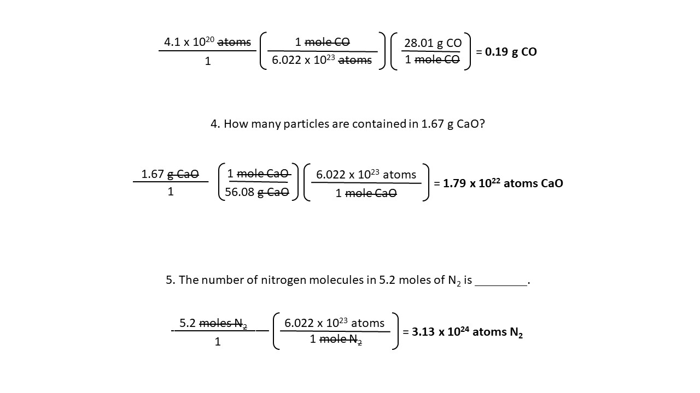
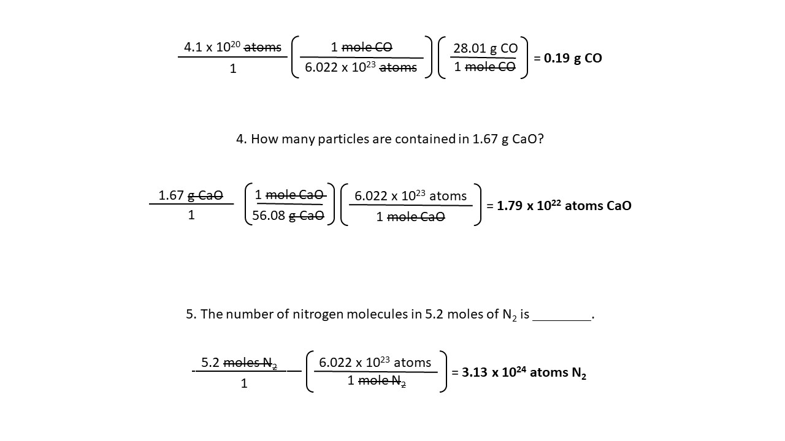

1. How many grams are contained in 0.44 moles of calcium?
2. Convert 4.54 moles magnesium carbonate to
molecules.
3. What is the mass of 4.1 x 1020 molecules of carbon monoxide?
4.
How many particles are contained in 1.67 g CaO?
5. The number of nitrogen molecules in 5.2 moles
of N2 is ________.
1. How many grams are contained in 0.44 moles of calcium?
0.44 moles Ca
1
40.08 g Ca
1 mole Ca
= 17.64 g Ca
2. Convert 4.54 moles magnesium carbonate to molecules
(4.54 moles Mg)
1
(6.022 x 1023 atoms)
(1 mole Mg)
= 2.73 x 1024 atoms Mg
3. What is the mass of 4.1 x 1020 molecules of carbon monoxide?
(4.1 x 1020 molecules CO)
1
(1 mole CO)
(6.022 x 1023 atoms CO)
(28.01 g CO)
(1 mole CO)
= 0.19 g CO
4. How many particles are contained in 1.67 g CaO?
(1.67 g CaO)
(1 mole CaO)
( 1 mole CaO)
(56.06 g CaO)
(6.022 x 10 atoms CaO)
(1 mole CaO)
= 1.79 x 1022 atoms CaO
5. The number of nitrogen molecules in 5.2 moles of N2 is ________
(5.2 moles N2)
1
(6.022 x 10 atoms N2)
(1 mole N2)
= 3.13 x 1024 molecules N2
 
